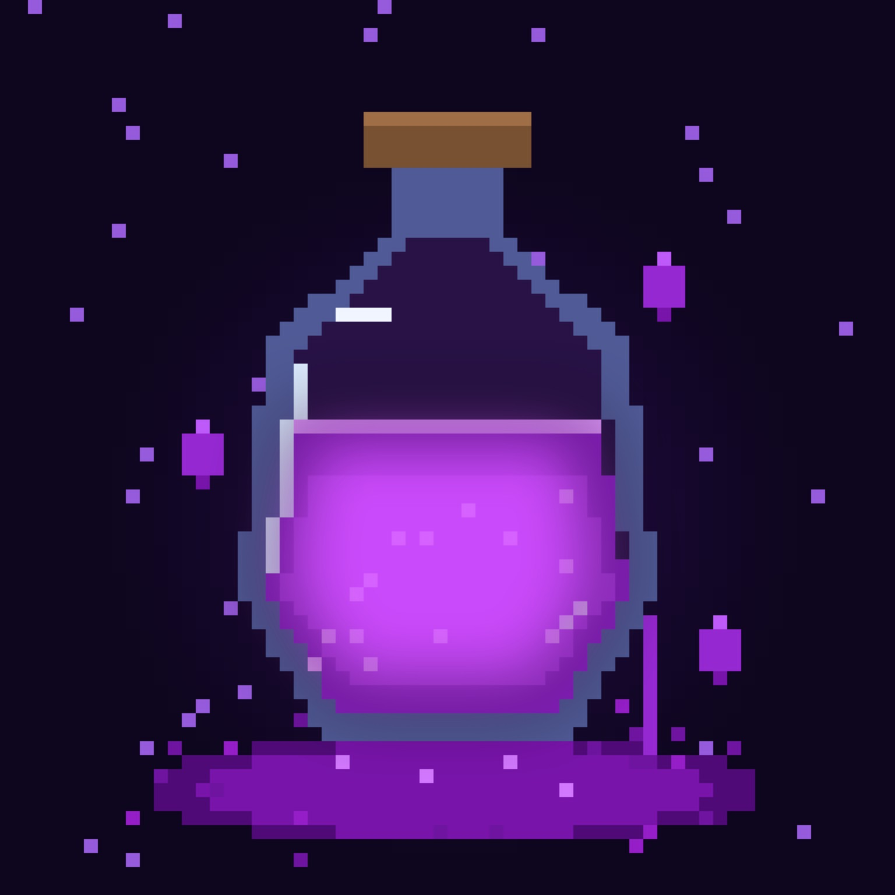

PURPLE BY MASTER
INFORMAÇÕES
Tudo sobre as atualizações do Purple Powers.
✦ Descrição
O Purple Powers é uma addon para Minecraft Bedrock que está em desenvolvimento.
Mais detalhes serão adicionados conforme o projeto evoluir.
✧ Mudanças nessa atualização
As mudanças da atualização serão publicadas aqui.
▣ Versão recente
Em desenvolvimento
A versão será informada quando uma release estiver disponível.